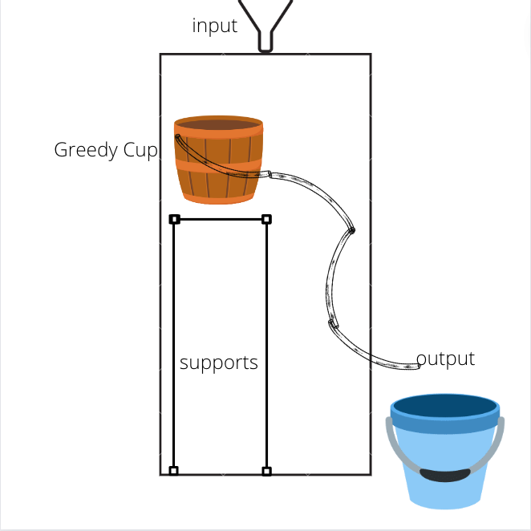
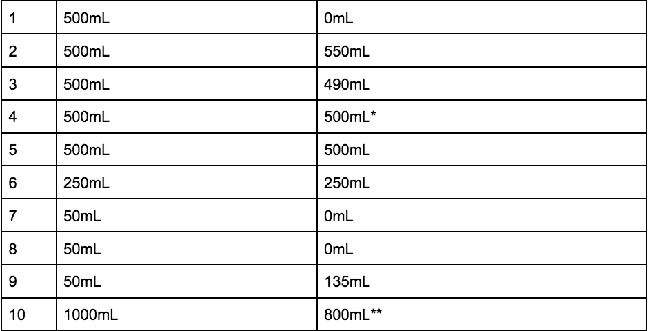
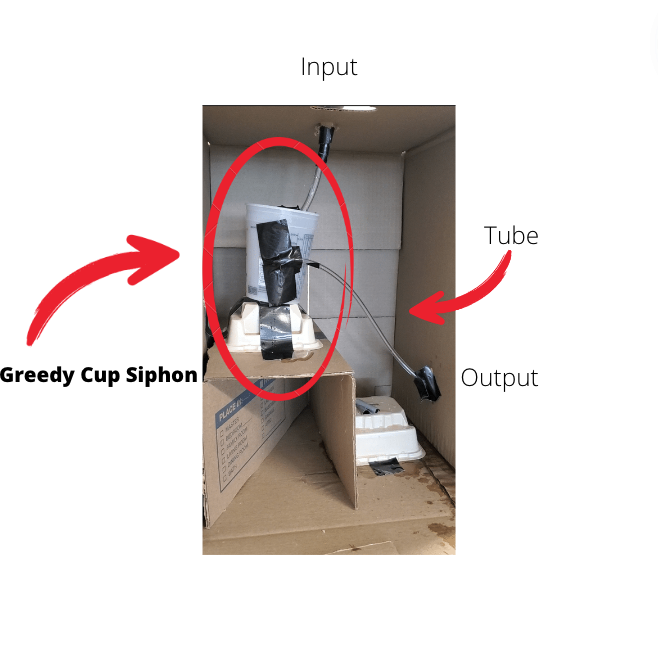

There is a greedy cup siphon in the box, however, there is a difference between our model and the box.

The mystery black box is a box that has a mechanism inside it that sometimes outputs no water, or sometimes outputs more water than inputted. On one trial we inputted 500mL of water, and got no water out. On another trial we inputted 500mL of water and got 1500mL out. Other trials we inputted 500mL of water and got 500mL back out. Our model featured a greedy cup siphon that sometimes outputted no water, or the same amount of water, and sometimes a little more water than we inputted.

Our model may have been more simple than the mechanism in the black box, as we were not able to recreate the function of over 3x the water we inputted being outputted.
The evidence supports that there is a greedy cup siphon in the black box because we had a trial where no water was outputted as the greedy cup was not activated by the initial water poured into the box, and many trials where we had the same output as input.
The special part about a greedy cup siphon is that it will have no output on the first trial, much like the black box. If there was not a trial where no water came out, then there would not have been a greedy cup siphon
